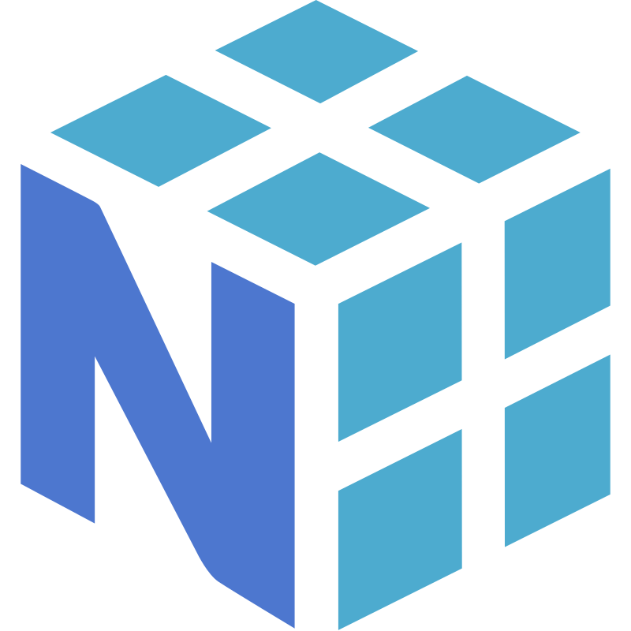
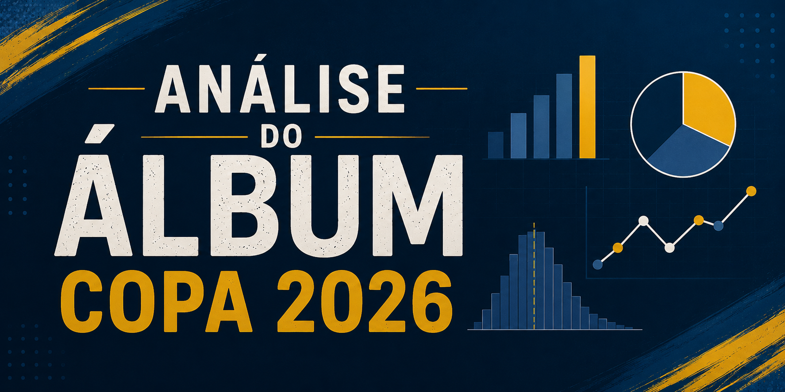
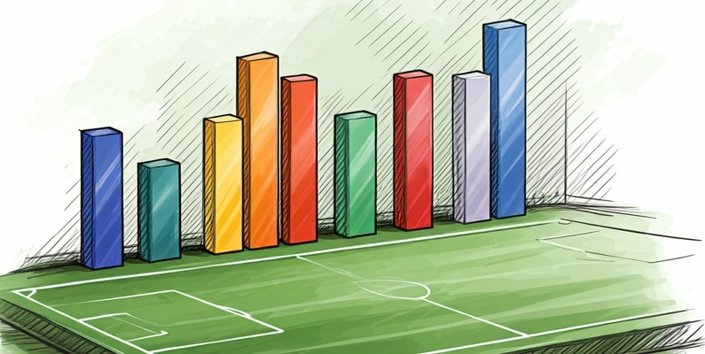
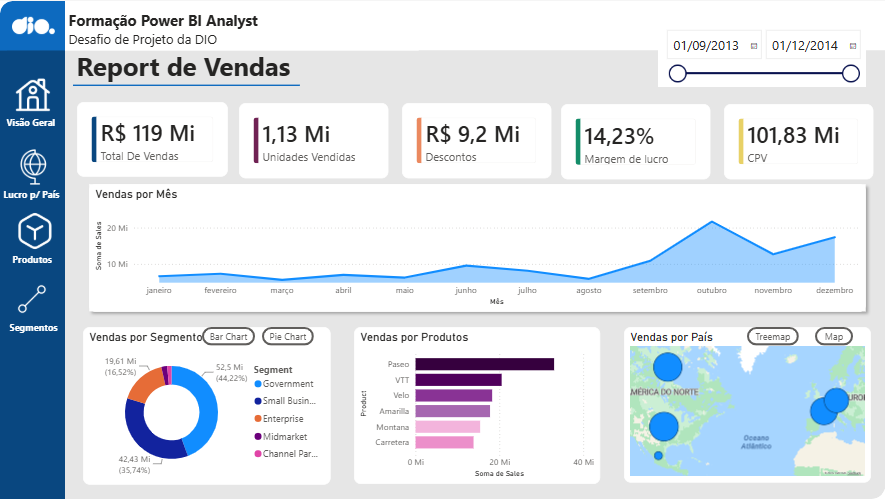
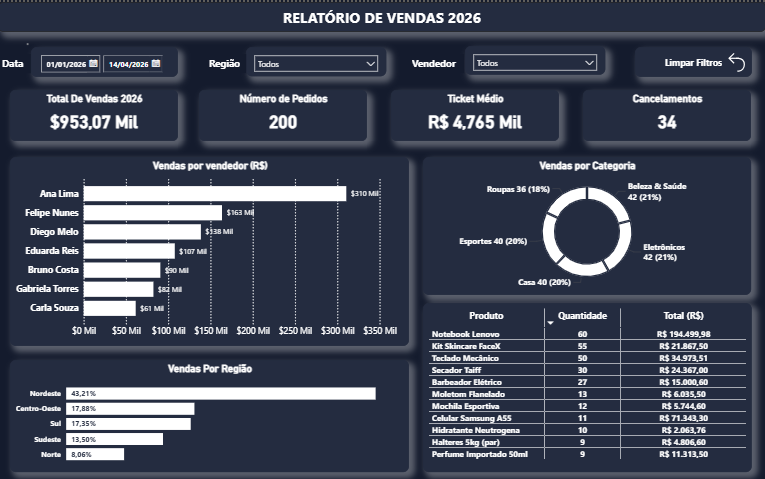
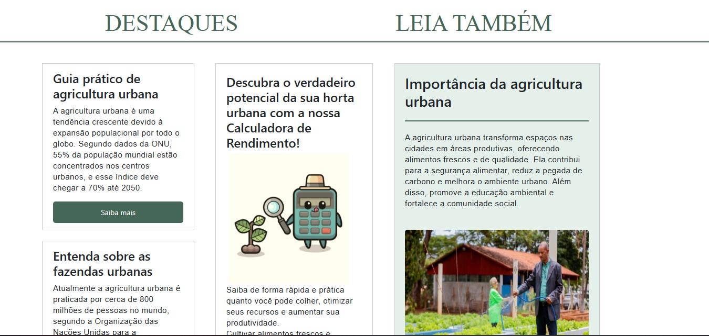
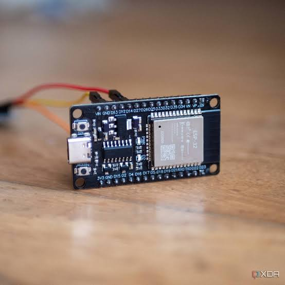

Prazer, meu nome é
Gabriel Orlandi Portes
Formado em Análise e Desenvolvimento de Sistemas e atualmente cursando Tecnologia em Inteligência Artificial.
Aqui você encontra meus projetos, experiências e um pouco da minha trajetória.
Sobre
Atualmente atuo como assistente de Vendas Júnior na RETESP, trabalhando com indicadores comerciais, relatórios e dashboards em Power BI, voltados ao apoio da tomada de decisão.
Minha trajetória na tecnologia começou ainda durante o ensino médio, com formações técnicas integradas. Em 2021, concluí o curso profissionalizante de Auxiliar de Desenvolvimento de Websites e, em 2022, o curso de Auxiliar de Informática para Internet, experiências que despertaram meu interesse pelo desenvolvimento e pela área de tecnologia.
Esse interesse me levou à graduação em Análise e Desenvolvimento de Sistemas pela FECAP. Atualmente, curso Tecnologia em Inteligência Artificial na FMU, buscando aprofundar meus conhecimentos em análise de dados, automação e aplicações de IA. Além da formação acadêmica, procuro manter uma rotina constante de estudos, certificações e projetos pessoais para evoluir continuamente como profissional.
Experiência
Assistente de Vendas Júnior
ago 2025 — atualRETESP Ltda · São Paulo, SP
- Análise de indicadores comerciais e respostas de cotações
- Criação de relatórios estratégicos para tomada de decisão
- Desenvolvimento de dashboards em Power BI
- Automação e organização de bases de dados com Excel e Python
Tecnologias

NumPyProjetos

Análise Álbum Copa do Mundo 2026
Simulação do custo estimado para completar o álbum da Copa utilizando análise estatística em Python.

Análise de Dados com Python
Projeto com o objetivo de realizar uma análise exploratória de dados utilizando informações da base de dados do Kaggle das partidas do Campeonato Brasileiro Série A de 2024.

Relatório Gerencial de Vendas - DIO
O objetivo foi construir um relatório financeiro interativo utilizando a base Financial Sample, explorando recursos do Power BI para transformar dados em informações relevantes para a tomada de decisão.

Dashboard de Vendas
Dashboard interativo de vendas desenvolvido no Power BI, conectado a uma planilha de dados que atualiza as métricas automaticamente conforme novos registros são inseridos


Monitoramento com ESP-32 CAM
Desenvolvimento de um sistema de segurança residencial de baixo custo utilizando o microcontrolador ESP32-CAM para monitorar a presença de pessoas em um ambiente e enviar alertas instantâneos via API do Telegram.